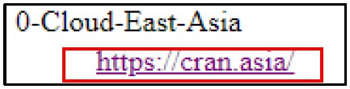

R Installion Guide
Hello All,
Below you may find the steps to download and install R and R Studio in your PC.
Section 1: Download and Install R
-
Follow this link. Click the "download R" link in the middle of the page under "Getting Started."

-
Search for “0-Cloud-East Asia” and click the corresponding link

-
Click on the "Download R for Windows" link at the top of the page.

-
Click on the "install R for the first time" link at the top of the page.
-
Click "Download R for Windows" and save the executable file somewhere on your computer. Run the .exe file and follow the installation instructions.

Section 2: Download and Install R Studio (NOTE: Installation of R Studio requires admin access)
-
Follow this link and click on the "Download" button
-
Scroll down and click on "Download RStudio Desktop” and save the executable file. Run the .exe file and follow the installation instructions. *

Section 3: Running R Studio
To launch R Studio, type “r studio” in your PC’s search box and click on “RStudio”
Last Updated: 8 September 2020
R Version: 4.0.2